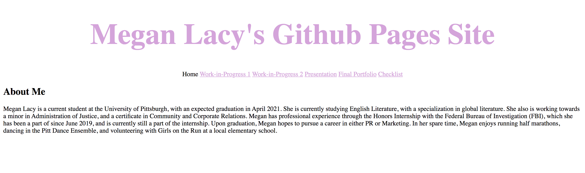
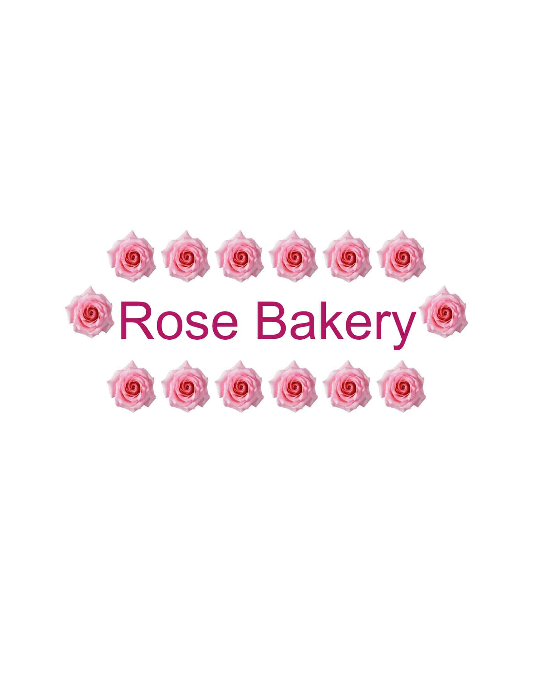
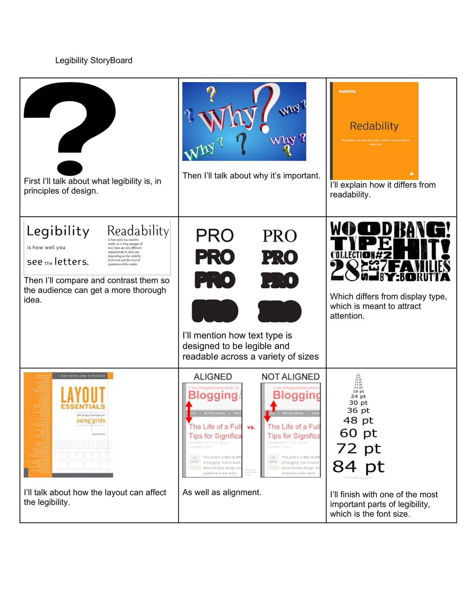

My Portfolio
type my final reflection
Showcases and Reflections
1. Soundscape Activity
For my soundscape, I chose to create something with a sci-fi/outer space element. I had never used Audacity before, so trying to learn how to use it remotely was slightly overwhelming for me at first. Once I got the hang of it, however, it actually became a project I enjoyed. I had fun mixing the sounds, moving them and arranging them until I was happy with the mix. At the beginning, I had a sound of a spaceship blasting into hyperdrive, and then mixed in sounds consisting of space swirls, outer space animals, a noise of a black hole void, and deep space. To me it has a big Star Wars feel. The sounds all merged together really well, and I was surprised at how well the clip turned out, considering it was my first time ever doing a project like that. My clip was a little over 60 seconds.
2. An example of how you made a choice related to genre or audience
An example of a choice I made related to genre is the design of my website. I chose to keep it professional and clean, with no flashy colors or fonts, and nothing that is too hard to read. If I had to reimagine this in a genre meant for kids, I would use brighter colors and add gifs and pictures to keep them interested. I would also make the font larger so it is easier for them to read if they are young. I would also consider creating a game to put on my website for them to play on, as right now my website is to showcase who I am and show my work, and there wouldn’t be a need for that on a kids site.
3. An example of how you made a choice related to color, fonts, captions, scale, or other aspects of the visual mode
A design I made related to aspects of the visual mode is my logo brand. I created a logo for a fake company called Rose Bakery. I used flowers around the logo, and used a pink hue. The concept I was going for was simple and sweet, and the pink represented that very well. If I were to create a logo for a more serious brand, like say a law firm, I would keep the design very simple. I would use black and white for my colors, a calligraphy font, and there would be no frilly design around the logo that wouldn’t cause the firm to be taken seriously.
4. An example of how you made a choice related to comparing one thing to another
A choice I made for comparison was the original design concept for my website versus my final design concept. I originally had red, dark gray, color gradients, and other wild choices because I wanted my website to stand out. It didn’t actually look that great, however, so I changed it to the one I have now, a clean, simple, professional layout. I think another revision that would be good is adding pictures to my bio now that I have the ability to do that, as I didn’t know how when I made the first design concept for my webpage. I don’t have a photo of my original design.
5. An example of something that frustrated you or took a larger amount of time than you would have liked
Something that frustrated me and took more time than I would have liked was my storyboard creation on photoshop. First, after transitioning to virtual learning and leaving campus, I was unable to access the storyboard I had finished and had to start from scratch. I have also never used photoshop before, and felt like I was behind all of my classmates who already knew how to use it. I was overwhelmed and struggling with this assignment. Eventually, after watching many tutorials, I was able to figure out the basics enough to complete the storyboard to my satisfaction.
6. An example of something you are particularly proud of
A project I really like is the photoshop genre swap assignment. We worked in groups for this assignment, which I enjoyed. We had to take a comedy movie poster, and turn it into a superhero movie. We chose the film Step Brothers, and photoshopped Thor and Loki onto it. I liked working in groups for this assignment because we were all able to contribute, and if someone was confused or didn’t understand something, there were other people able to help out. I prefer this to trying to figure everything out on my own and being lost. For future digital media work, I would like to continue working with the team of people.